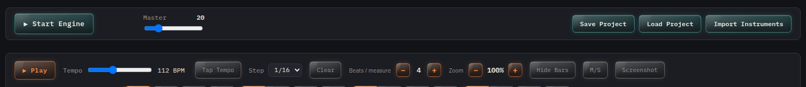
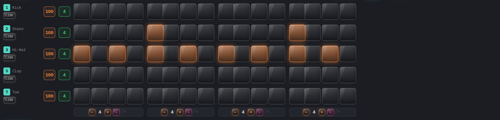
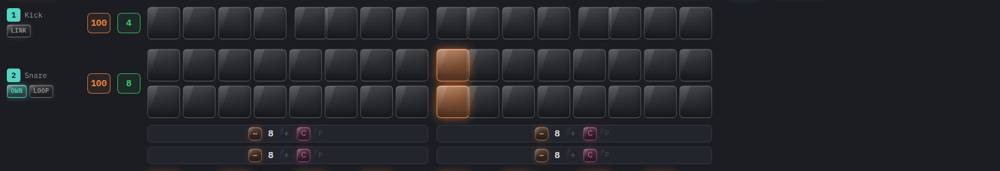
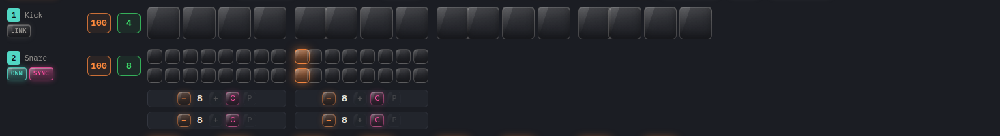
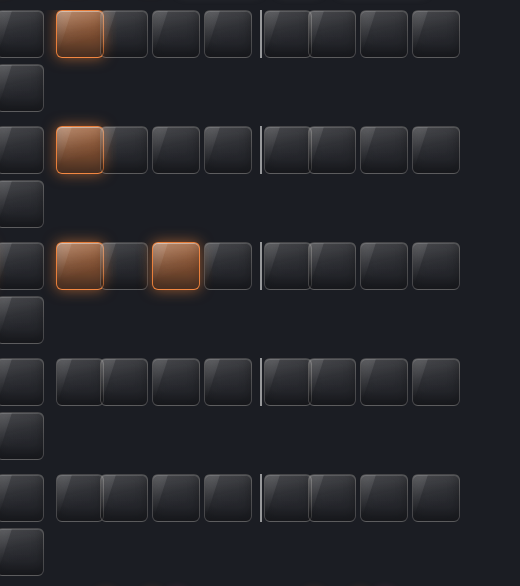
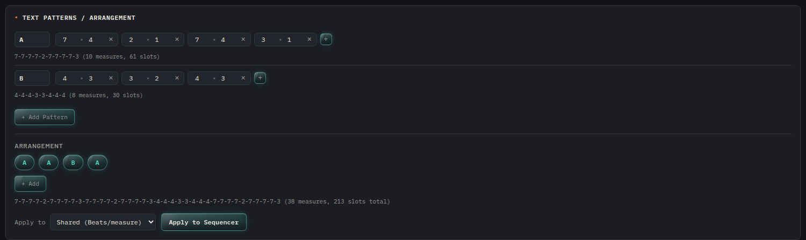

How the D20 Synth Workbench sequencer's grid maps to real musical structure
The step grid you're programming isn't just a row of buttons — it's a direct, literal representation of a bar of music, broken down along two separate axes: how the bar is subdivided (structure), and how fast those subdivisions actually play (timing). Understanding the difference between those two axes, and how the per-row independence features build on top of them, is what lets you move from "a row of clicked-on boxes" to an arrangement with real rhythmic character: syncopation, polymeter, dynamics, and phrasing.

Every acoustic or electronic groove is built on a hierarchy: a piece has a tempo, the tempo is organized into bars (measures), each bar contains a fixed number of beats, and each beat can itself be subdivided into smaller units — eighth notes, sixteenth notes, triplets, and so on. A standard drum-machine pattern in 4/4 time, programmed at sixteenth-note resolution, has 4 beats per bar and 4 sixteenth-note slots per beat, for 16 total steps — which is exactly what a "16-step sequencer" means, and exactly what this grid defaults to.
The workbench exposes that hierarchy directly as two separate controls, and their product is the actual number of clickable cells you see:
Beats / measure sets how many beats are in the bar — the top-level meter. This is a global setting shared by every row unless a row is deliberately given its own, and it's adjusted with a plain −/+ stepper, from 2 up to 12.
Slots per beat sets how many subdivisions each of those beats is cut into, and it's set per row — the green number next to each row's volume. A value of 4 gives you sixteenth notes (the standard, default resolution); 2 gives you eighth notes; 8 gives you thirty-second notes. Its range is 1 to 8.
Worked example. Beats/measure = 4, Slots per beat = 4 → 4 × 4 = 16 cells, the default grid. Each cell is a sixteenth note. A basic four-on-the-floor kick lands on cells 1, 5, 9, and 13 — the first slot of every beat:
[X . . .][. . . .][X . . .][. . . .] (beat groups in brackets)
Raise Slots per beat to 8 on the snare row and you can now place a snare not just on beat 3 (the backbeat) but roll it — two, three, or four quick hits leading into the backbeat, the way a real drummer decorates a fill — because there are now twice as many addressable positions inside every beat on that row.
This is the reason the two controls behave differently in the interface. Beats/measure is a small, coarse number (how many beats — almost always 3, 4, 5, 6, or occasionally something odd like 7) and a stepper is a reasonable way to set it. Slots per beat is where the actual rhythmic detail lives, so it takes a typed number directly. If you need a bar with more than 12 beats, or you want to build an irregular sequence of beat lengths without clicking a stepper dozens of times, the Text Patterns tool described further down is the intended way to do that — it accepts typed, shorthand input and can set the shared structure to whatever length you want, well past what the stepper's range suggests.
Slots per beat sets a uniform value across every beat in a row, which covers most patterns. When you need one specific beat to have a different subdivision than the others — a fill only on beat 4, say, while beats 1–3 stay plain — the floating strip beneath the grid gives you that finer control directly, one beat-group at a time, each with its own −/+ stepper, a C (copy) button and a P (paste) button for moving one beat's programmed pattern onto another.

Everything above is about structure — how many boxes exist. The Step dropdown (1/8, 1/16, 1/32) is a completely separate axis: timing. It sets how much real time a single existing cell represents, as a note value, independent of how many cells there are.
Concretely: at a fixed tempo, switching Step from 1/16 to 1/32 does not add a single cell to the grid. It halves the real-time duration of every cell that's already there, so the same 16-cell pattern you programmed now plays through in half the time — the shape is identical, just compressed. If what you actually want is a genuine 32nd-note drum roll — twice as many distinct, individually-addressable hits inside the same musical time — that's a structural change (raise Slots per beat to 8 on that row), not a timing change. The two are easy to conflate because they both involve "32nds," but one adds notes and the other just plays existing notes faster.
Tempo itself (the BPM slider, or Tap Tempo if you'd rather set it by feel than by dragging) multiplies on top of step resolution the same way it would for a live drummer: a sixteenth note at 90 BPM is a specific, longer duration than a sixteenth note at 160 BPM, but it's still "a sixteenth note" structurally in both cases.
By default every row is linked — it shares the exact same beat count and subdivision as the rest of the kit, which is what you want for a conventional groove where the whole kit breathes together. But real arrangements often break that symmetry on purpose: a hi-hat pattern that repeats every 3 beats against a kick and snare that repeat every 4, a shaker that runs a five-against-four cross-rhythm, or a fill that briefly speeds up just one voice. The workbench supports this by letting you unlink any row (click its LINK badge, or just set that row's own Slots per beat, which unlinks it automatically) so it gets its own independent beat structure.
Once a row is unlinked, it also carries a second, separate choice — LOOP or SYNC — and this is the part that's genuinely a musical decision, not just a display setting, because it changes what the row actually plays, not only how it's drawn.


Neither choice is "correct" — they're different compositional tools. Use LOOP when you want a part to genuinely cycle at its own length and slowly rotate against the rest of the arrangement, a classic polymetric technique for generating variation without programming every bar by hand. Use SYNC when you want a busier or sparser subdivision that still locks to the same one-bar phrase as everything else, which is the far more common case for a straightforward fill or a denser hi-hat pattern — and the only way to get cells that are genuinely faster subdivisions of the current bar rather than a same-speed row that's simply longer.
A pattern made entirely of full-strength hits reads as mechanical no matter how interesting the rhythm is — real playing lives in the dynamics. Two separate controls exist for this, at two different scopes:
Row volume (the orange number next to each row, visible in the row close-up above) is a single, constant level for that row within this pattern — useful for balancing a kit relative to itself, for example keeping hi-hats well under the kick and snare, or bringing a percussion layer in quietly under the main pattern. It's separate from the instrument's own Level parameter, which is a property of the voice itself and stays constant across every row and pattern that uses it.
Per-step velocity (shift-drag any lit cell) sets that one hit's individual strength, 0–100, with a live numeric readout while you drag. This is where ghost notes and accents come from: a snare backbeat at full velocity with quiet, low-velocity ghost notes filling the gaps between it is the single most common technique for turning a flat, programmed snare part into something that feels played. The same tool works for building a crescendo into a fill — a run of cells with steadily increasing velocity reads as a drummer building energy into a hit, not just "more notes."
Once a row has more than a handful of beats — a shared structure raised past 8 or 9, or a row built from a long Text Pattern below — the ordinary gap between beats stops being enough to read the bar at a glance. A second, slightly stronger marker appears automatically every 4 beats to break the row into readable four-beat phrases, the way sheet music groups bars into lines.

The Beats/measure stepper tops out at 12, and clicking it repeatedly to build something long and specific is slow and error-prone. The Text Patterns panel is the typed alternative: instead of clicking a stepper, you write the beat structure as a short list of (slot count × repeat count) pairs, and multiple named patterns can be chained into an arrangement that concatenates their expansions into one long beat list.

7-7-7-7-2-7-7-7-7-3: ten beats, sixty-one total slots, typed in four pairs instead of clicked ten times. Pattern B is a second, shorter structure. The Arrangement row below chains pattern references — here A, A, B, A — concatenating their expansions into one long beat list, shown in the preview line beneath it. "Apply to Sequencer" then writes that full list to whichever target is chosen from the dropdown: the shared structure (which sets Beats/measure directly, with no 12-beat ceiling) or one specific row, which unlinks that row and gives it exactly that beat structure on its own.Reach for this whenever you're transcribing something with a beat count higher than 12, or a structure that changes shape partway through the bar — it's the direct, typed-entry path to a long or irregular measure that the pluses and minuses alone aren't built for.
A fully arranged bar in this tool is really four decisions layered on top of each other: how many beats it has and how finely each is cut (structure), how fast those cuts actually play at the current tempo (step resolution), which instruments should break away from the shared meter entirely and how they should relate to it when they do (LOOP or SYNC), and how hard and how consistently each hit should land (row volume and per-step velocity).
Example: a half-time groove with a rolling snare and a polymetric hi-hat.
Beats/measure = 4, kick and snare left at the default 4 slots per beat and linked (16 steps, sixteenth-note grid). Kick on beats 1 and 3, snare on beat 3's backbeat with three quiet, ascending-velocity ghost notes leading into it for a roll. Hi-hat unlinked, its own Slots per beat raised to 6 and left in LOOP mode instead of SYNC — so it repeats every 6 steps against the kit's 16, its accent pattern rotating to a new position in the bar each time through, adding movement without anyone touching a single cell after the first pass. Step resolution left at 1/16 throughout; Tempo (or Tap Tempo) set to taste. That's a complete, dynamic, non-repetitive bar built entirely from the controls above.